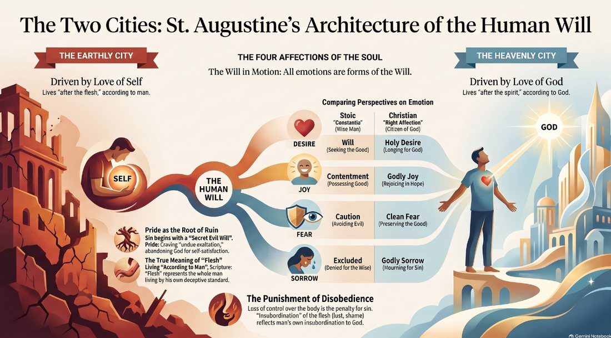

My earnest desire in this post is to answer, once and for all, the question: “Why would a God who is good send me to hell for eternity just because I did not believe in Jesus (His Son)?” As far as I know that question has been around since Christ said, “I am the way, the truth, and the life. No one comes to the Father except through Me” (John 14:6). I am a ‘words matter’ guy. I believe all engineers are. But words matter even more depending on the seriousness of the subject, and I can think of nothing more serious than the eternal state of one’s soul. So I am going to define each word before I give my answer.
Why — This is a common word used when people need to know the reason for something. Personally, it is one of my favorite words. I always want to know the reason for most everything — especially the ‘core’ reason, the ‘fundamental’ reason. My only concern here is what one does with the answer. For example: what if you don’t like the answer? What can you do about it? You can certainly discard it and hope you are right. But that’s about it. You can’t argue with God and get Him to change His solution for saving humanity from the effects of man’s sin. If there were any other solution than what Christ, His only begotten Son, endured — don’t you think He would have done it? Christ Himself settled that question in Gethsemane. With sweat falling from His forehead like drops of blood (Luke 22:44), He prayed: “My Father, if it is possible, may this cup be taken from me. Yet not as I will, but as you will.” Then He prayed again: “My Father, if it is not possible for this cup to be taken away unless I drink it, may your will be done” (Matthew 26:39, 42). There was no other way.
Good — What is your definition of good? Mine is simply whatever is true, honorable, right, pure, lovely, excellent… But what do those words mean? Thankfully we don’t have to chase our tail here, because it is God alone who defines what good is. It is an eternal, inherent attribute of who He is. Same thing with love — it would be impossible to define love if there were no God. Your definition of good may be different, but again: what can you do about it? You can discard His and hope that you are right. That if God were good, He would not send anyone to hell for any reason — and surely not for simply not believing in His Son.
Hell — What is your definition of hell — beyond what has been passed down to us in literature? Dante’s Inferno is the most popular description of hell that I know of outside the Bible. To define it properly here would take too much time, so I am going to write a separate post that explains it fully from the Bible. For now, let’s say that hell is simply a place where God is not. No trace of God whatsoever. Similarly, heaven is simply a place where God is. Fully. No trace of sin or evil whatsoever. I will cover what the Bible says happens in both places in that future post as well.
Eternity — I believe there is no confusion about its definition. Time is an earthly construct — physics itself does not know whether it is fundamental or emergent, or why it ‘flows’ in only one direction. But within the question we are answering, it is the magnitude that is the problem. From all I have heard, it is another aspect of ‘the punishment does not fit the crime.’ Meaning: why would a ‘good’ God send me to hell for an ‘eternity’? Isn’t that just plain vindictive? Disproportionate? Overkill? Cruel and unusual?
Believe — Of all the words in this question, this one deserves the most attention. From Genesis to Revelation, faith — trusting God and responding to His Word — stands among the Bible’s central unifying themes. Fortunately, I have already written posts about what this word means in the Bible: Jesus. Believe IN. and The Architecture of Biblical Faith.
Now that we have clarified the key terms, we can answer the question more directly. However, I need to do one more thing. I need to mention that I will be using the core ideas St. Augustine used in his famous book The City of God, where he talks about the architecture of the human will and the four affections of the soul. I do not need to do this — my answer stands alone on what the Bible teaches. It’s just that I found it helped me personally understand it a little better, based on Augustine’s insights. (The diagram below comes from my NotebookLM study of it.)

Here is my answer. There is popular lighthearted context before this question is asked. It goes like this. You have just died, and St. Peter meets you at the pearly gates. He asks, “Hello. May I help you?” You reply, “I think I just died. One minute I was having fun climbing the cables on Half Dome. Suddenly I saw a flash of lightning. Next thing I knew I was here.” Peter replies, “You are exactly right. You are dead as a doornail. I was sent here to escort you to your eternal home. You get two choices: heaven or hell.” Stop here — because this is the point where the confusion comes. I am going to give you two scenarios of what comes next, and then talk about them as we close with my answer.
Scenario 1. You say, “Well, I am new to this. Can you tell me a little more about these choices? What they involve?” Peter replies, “Absolutely! In heaven everything is perfect. Just like it was in the Garden of Eden. No more death, no more tears, and no more suffering. Perfect peace, rest, and safety. Streets of gold.” You reply, “Wow! That sounds great to me! What is hell like?” Peter replies, “That is a little different. It isn’t perfect at all. There is pain, suffering, and it’s an eternal death. It’s dark. There is endless weeping and gnashing of teeth. Fire and brimstone are everywhere. Country music is played continually.” You reply, “That’s an easy decision. I want to go to heaven!” Peter replies, “Good choice! I must say, everyone loves it there. Let me check one thing first. Hmm. I do not see your name on the list. Did you ever accept Jesus’ offer of forgiveness? His blood would cover your sin, but I see here that your sin remains. No sin is allowed in heaven. Not even the slightest trace. I am sorry, but there is only the other option for you. Did you bring any asbestos with you?”
Scenario 2. You say, “Well, I am new to this. Can you tell me a little more about these choices? What they involve?” Peter replies, “This is God’s home. He is first and foremost in everything. Only His will is done. He is worshiped day and night forever. No more death, no more tears, and no more suffering. Perfect peace, rest, and safety.” You reply, “I like the streets of gold and no more suffering. But doing only His will, and putting Him first in everything, worshiping Him day and night? Doesn’t that sound a little extreme to you? What is hell like?” Peter replies, “The best way to put it is: this is your home. More of what you are used to. You are first and foremost in everything. Your will is done. No one will tell you what to do. In fact, you are even able to worship yourself. But there is pain, suffering, and it’s an eternal death.” You reply, “I am not a fan of pain and suffering, but everything else sounds great! And like you said, that is what I am used to. What I always wanted on earth. I want to go to hell!” Peter replies, “Good choice! I am not supposed to give my opinion, but from everything I know about you, you will be happier there. Did you bring any asbestos with you?”
From hearing these two scenarios, can you now understand what the answer to the question is? The answer is: God is sending you to where you want to go. How you lived your entire life on earth revealed to Him that you would be miserable in heaven. Jesus said as much: “the light from heaven came into the world, but they loved the darkness more than the light” (John 3:19) — and Romans 1 says three times that God finally “gave them over” to what they insisted on choosing. In fact, creating a place of your choice was a great act of love and mercy on His part. Consider the alternative. He could have forced you into heaven — but that, by your own definition, would have been hell! And after that, the only alternative left would have been annihilation.
So the title of this post is the whole answer: heaven or hell — your choice. And if you are reading this, you are still on the side of eternity where the choice is open. I wrote about how to settle it, and how to know it is settled: Are You a Christian? Choose the City where God is. He has been choosing you all along.
Comments